En las cosmologías indígenas de El Salvador, la frontera entre un animal, un espíritu y una entidad castigadora no existe de la misma forma que en el pensamiento occidental. Los seres de este catálogo no son "monstruos" ni "leyendas": son parte del orden del mundo, figuras que pertenecen al mismo sistema que los ciclos de lluvia, las cosechas de maíz y los ritos de paso. Separarlos de su contexto cosmológico para estudiarlos como si fueran criaturas físicas —como hace la criptozoología— es un error metodológico. Este artículo los estudia en su propio terreno.
La mitología zoológica salvadoreña es, además, un sistema de conocimiento ecológico codificado. Los relatos sobre La Siguanaba asociados a ríos y quebradas, el Cadejo como guardián de los caminos nocturnos, el Tata Duende como protector del bosque: estas figuras transmiten conocimiento de riesgo, comportamiento ambiental y normas de convivencia con el ecosistema en una forma que sobrevive siglos de transformaciones culturales. Cada entidad tiene su territorio, su función y —lo que las hace operativas— sus debilidades.
Este catálogo se basa exclusivamente en las recopilaciones de tradición oral salvadoreña: las obras de María de Baratta, Jorge Lardé y Pedro Geoffrey Rivas, así como en el trabajo de campo etnográfico contemporáneo en comunidades rurales de Chalatenango, Morazán, Cabañas, Sonsonate y Ahuachapán. Las fichas técnicas que acompañan a cada entidad incluyen su zonificación geográfica, su efecto sobre las víctimas y las contramedidas tradicionales para neutralizar su acción.
El Núcleo Mítico: Siguanaba, Cipitío y Cadejo
Las tres figuras centrales del imaginario mitológico salvadoreño comparten una estructura narrativa común: son entidades de doble naturaleza —bella y terrible, infantil y eterno, protector y destructor— que habitan los espacios liminales del territorio nacional. Su vigencia no es folklórica sino operativa: en comunidades rurales de todo el país, los relatos de encuentros con estas entidades continúan siendo parte del conocimiento práctico de supervivencia.
La Siguanaba
También: Sihuanaba, Cigua, La Mujer del Río, Sihuehuet
La Siguanaba es la figura femenina más poderosa del imaginario mitológico salvadoreño. Sus raíces están en la Cihuanamej nahua —entidades femeninas vinculadas a las aguas y a los cruces de caminos— que en El Salvador evolucionó hacia una figura de naturaleza dual: hermosa cuando se la ve de espaldas, monstruosa cuando se voltea. Originalmente llamada Sihuehuet (Mujer Hermosa), fue castigada por el dios Tláloc debido a sus infidelidades y por descuidar a su hijo.
Su función principal es la de castigadora de hombres infieles o que rompen contratos sociales vinculados al matrimonio y la familia. Se manifiesta como una mujer de cuerpo escultural y cabello largo, lavando ropa en el agua. Atrae a hombres trasnochadores y mujeriegos. Al tenerlos cerca, da la vuelta y muestra su rostro real de yegua o calavera. Provoca la pérdida de la razón ("jugar el alma") o la muerte por el impacto del susto.
La versión salvadoreña está íntimamente ligada al río Lempa y sus afluentes, y a las quebradas de la zona norte del país. Los relatos históricos recopilados por María de Baratta en los años 1940 incluyen testimonios de comunidades pipiles de Nahuizalco e Izalco que describían a la Siguanaba no como un peligro difuso sino como una entidad con territorios específicos, a la que se podían hacer ofrendas para evitar su acción.
// Debilidad / Contramedida
Para no perder el alma, la víctima debe morder una cruz de metal, jalarle el cabello a la entidad, o cortar una rama de escobilla y azotar el suelo para romper el hechizo.
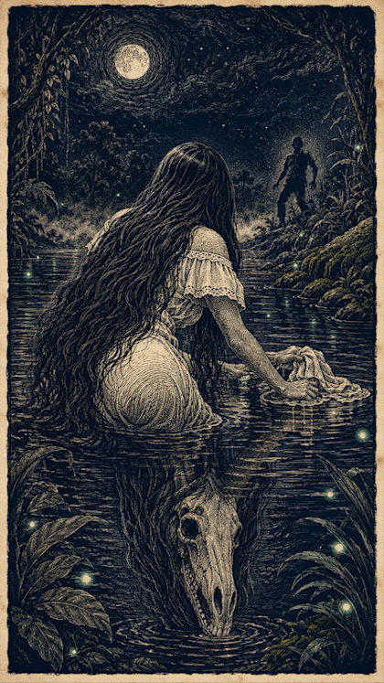
La Siguanaba · El Salvador · Arte original · Mundo Maravilloso · 4:3
El Cipitío
También: Cipote, El Niño del Río, Hijo Maldito, Hijo de la Siguanaba y el dios Lucero
El Cipitío es la figura más querida —y más perturbadora— de la mitología salvadoreña. Es el hijo de la Siguanaba y un mortal (o del dios Lucero, según variantes), condenado a la eterna infancia como consecuencia del pecado de su madre. Los dioses lo condenaron a la eterna niñez: un niño que nunca puede ser adulto, atrapado entre la humanidad y lo sobrenatural.
Se lo describe como un niño de apariencia de entre 8 y 12 años, de grandes ojos, vientre prominente, pies al revés (los talones hacia adelante) y un sombrero de palma enorme que le cubre el rostro. Viste ropa de manta. Su condena es vagar eternamente por las orillas de ríos, milpas, cafetales, matorrales, trapiches de molienda y caminos rurales, sin poder crecer, sin poder morir.
No es malévolo sino travieso y melancólico. Lanza piedras y flores a las muchachas hermosas a las que persigue. A los hombres les hace burlas y les deforma los caminos. Roba comida de las cocinas —especialmente ceniza y brasas, que come—. La tragedia del Cipitío —un niño que nunca puede ser adulto— resuena con una profundidad emocional que explica por qué el personaje sobrevive cinco siglos de transformaciones culturales.
En la versión lenca del oriente de El Salvador, el Cipitío tiene atributos ligeramente distintos: sus pies normales hacia adelante, pero camina de espaldas. Esta variante sugiere una raíz independiente que confluyó con la versión nahua-pipil del occidente.
// Debilidad / Contramedida
Para alejarlo de una joven, se le debe pedir que haga una tarea imposible (como contar los granos de un saco de arena) o comer en el baño de forma grotesca para que pierda el interés y se marche por el asco.
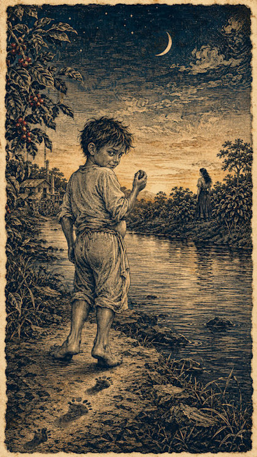
El Cipitío · El Salvador · Arte original · Mundo Maravilloso · 4:3
El Cadejo
También: Cadejos, Los Dos Perros, El Perro del Diablo y el Perro de Dios
El Cadejo es uno de los seres más peculiares del imaginario salvadoreño por su dualidad constitutiva: no existe un solo Cadejo sino siempre dos, uno blanco y uno negro, opuestos y complementarios. Su origen es mestizo: fusión de los guardianes espirituales indígenas Nahuales con el concepto europeo del demonio canino.
El Cadejo Blanco es un espíritu protector de pelaje denso. En las tradiciones de Chalatenango y Cabañas, está vinculado al maíz y a la protección de los milperos —aparece específicamente en los caminos entre los campos de cultivo—. Interviene interponiéndose en combate para defender a los humanos, especialmente a los borrachos.
El Cadejo Negro es una criatura maligna y esquelética. Está asociado al aguardiente y a los hombres que regresan ebrios de las ferias. Ataca físicamente a los caminantes y busca robarles el alma.
Hay también una figura intermedia poco conocida fuera del país: el "Cadejo gris" o "Cadejo manchado", que aparece en relatos de comunidades de Sonsonate y Ahuachapán. No es ni completamente benévolo ni completamente malévolo, sino un ser de naturaleza incierta que puede ser cualquiera de los dos según el comportamiento moral del viajero que lo encuentra. Esta variante tripartita del Cadejo, si está bien documentada, sería única en toda la región.
Se manifiestan como perros de tamaño sobrenatural, con ojos rojos brillantes como brasas, pezuñas de chivo y un olor característico —a flores el blanco, a azufre el negro—. En algunas versiones, los dos combaten invisiblemente sobre el cuerpo dormido del viajero.
// Debilidad / Contramedida
Al Cadejo Negro se le ahuyenta mostrando objetos religiosos como rosarios, crucifijos, o haciendo la señal de la cruz. Evitar caminar a altas horas de la noche reduce el riesgo de encuentro.
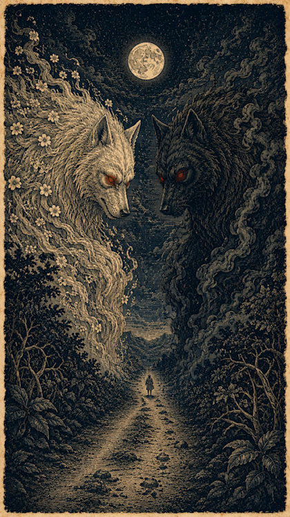
El Cadejo · Versión salvadoreña · Arte original · Mundo Maravilloso · 4:3
Criaturas y Guardianes del Agua
En la cosmovisión salvadoreña, el agua no es un recurso sino un territorio habitado. Los ríos, lagos, lagunas y pozas profundas tienen guardianes específicos que regulan quién puede entrar, qué puede extraerse y qué comportamientos son aceptables. Las entidades de este apartado no son genéricas: cada una tiene su cuerpo de agua asignado, su manifestación particular y su sistema de contramedidas.
La Sirena de la Laguna de Alegría
También: La Mujer del Cráter, La del Volcán Tecapa
Esta entidad es exclusiva de la Laguna de Alegría, en el cráter del volcán Tecapa, Usulután. Su origen está vinculado a la actividad geotérmica y mística del volcán. Se manifiesta como una mujer de extraordinaria belleza, con cola de pez, que emerge del centro de las aguas azufradas a mediodía o en noches de luna llena.
Canta melodías hipnóticas destinadas exclusivamente a hombres jóvenes y apuestos. Los atrae hacia el centro de la laguna para ahogarlos. Su función es selectiva: no ataca indiscriminadamente, sino que elige a sus víctimas por criterios estéticos, lo que la convierte en una entidad de tipo "seducción fatal" diferente de la Siguanaba, cuyo criterio es moral.
// Debilidad / Contramedida
Los hombres jóvenes deben evitar bañarse solos en la laguna a ras de mediodía. El sonido de ruidos fuertes o rezar comunitariamente rompe su influjo.
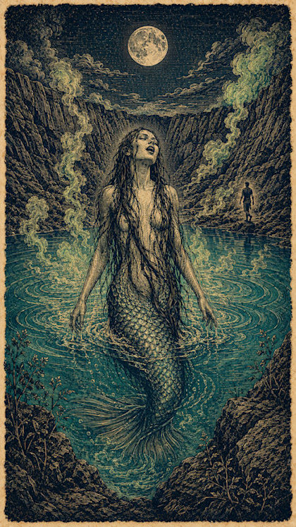
Sirena de Alegría · Usulután · Arte original · Mundo Maravilloso · 4:3
El Tabudo
También: El Pescador del Lago, El Viejo de Coatepeque
El Tabudo es una leyenda urbana y rural de Santa Ana sobre un pescador adinerado que desapareció misteriosamente en las profundidades del lago de Coatepeque. Se manifiesta como un hombre anciano con facciones exageradas: piernas extremadamente largas y delgadas, y labios muy prominentes. Aparece sentado sobre troncos flotantes.
A diferencia de las entidades agresivas, el Tabudo es evaluador: no ataca sino que juzga. Evalúa el respeto de los visitantes del lago. A los pescadores locales les bendice la pesca si le agrada su actitud. A los turistas engreídos los confunde haciéndoles perder el rumbo en el agua. Su función es regulatoria: mantiene el equilibrio entre explotación y respeto del ecosistema lacustre.
// Debilidad / Contramedida
Mostrar respeto absoluto por el ecosistema del lago y ofrecerle tabaco o alcohol (lanzándolo al agua) como muestra de cortesía.
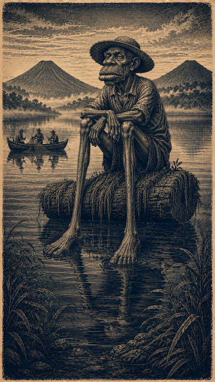
Ilustración · El Tabudo
Sentado en tronco flotante, Lago de Coatepeque
4 : 3
El Tabudo · Santa Ana · Arte original · Mundo Maravilloso · 4:3
Chasca, la Virgen del Agua
También: La del Ropaje de Plumas, La de la Canoa Blanca
Chasca es una de las entidades más antiguas del corpus salvadoreño, de origen prehispánico en la región lenca/pipil de Ahuachapán. Su leyenda trágica relata el asesinato de un pescador y el suicidio de su amada por amor. Se manifiesta como una figura espiritual femenina vestida con ropajes hechos de plumas blancas, flotando sobre una canoa blanca en noches de luna llena.
A diferencia de casi todas las demás entidades acuáticas, Chasca no es hostil. Su avistamiento es un presagio de excelente pesca, mar calmo y bendiciones para las comunidades locales. Es una de las pocas figuras femeninas acuáticas del imaginario salvadoreño con función exclusivamente benévola, lo que sugiere una raíz ritual distinta: posiblemente una deidad menor de la fertilidad marina transformada en leyenda popular.
// Observación
No requiere contramedidas por ser un espíritu benévolo, pero desaparece de inmediato si se intenta encender luces artificiales potentes hacia ella.
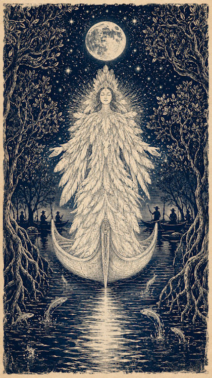
Chasca · Ahuachapán · Arte original · Mundo Maravilloso · 4:3
La Cuyancúa
También: La del Cerro, La Serpiente-Cerdo
La Cuyancúa es una divinidad prehispánica de Izalco, Sonsonate, vinculada al control del clima y los recursos hídricos. Se manifiesta como una enorme criatura anfibia con la mitad superior del cuerpo de cerdo y la mitad inferior de una serpiente gigante. Su presencia no busca dañar humanos, pero su grito —un chillido mezcla de cerdo y siseo— sacude la tierra.
Su paso abre nuevos manantiales subterráneos de agua limpia, lo que la convierte en una entidad de fertilidad hídrica. Tradicionalmente no se le ataca, solo se le teme por los pequeños retumbos de tierra que ocasiona al arrastrarse. Es un ser sagrado, no un peligro, y su avistamiento se interpreta como señal de que el agua está cerca.
// Observación
Es un ser sagrado. Tradicionalmente no se le ataca, solo se le teme por los pequeños retumbos de tierra que ocasiona al arrastrarse.
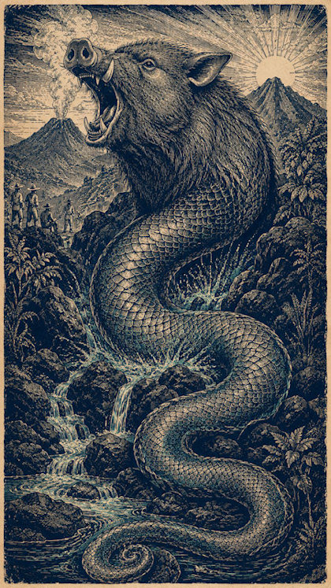
La Cuyancúa · Sonsonate · Arte original · Mundo Maravilloso · 4:3
Las Managuas
También: Duendes de Agua, Los Hombrecillos del Río
Las Managuas son espíritus menores de la naturaleza, de origen prehispánico y mitología fluvial. Se manifiestan como pequeños seres humanoides antropomórficos parecidos a duendes translúcidos o hechos de pura agua. Habitan en pozas profundas de ríos limpios de las zonas centrales y occidentales de El Salvador.
Su comportamiento es travieso, no agresivo: roban y esconden la ropa o herramientas de las personas que van a lavar o bañarse a los ríos. Pueden provocar desorientación temporal si el bañista invade su espacio sagrado. No causan daño físico, pero su acción es un recordatorio de que el río tiene dueños que no son humanos.
// Debilidad / Contramedida
Dejar una pequeña ofrenda de comida o frutas en la orilla del río antes de entrar al agua evita sus travesuras.
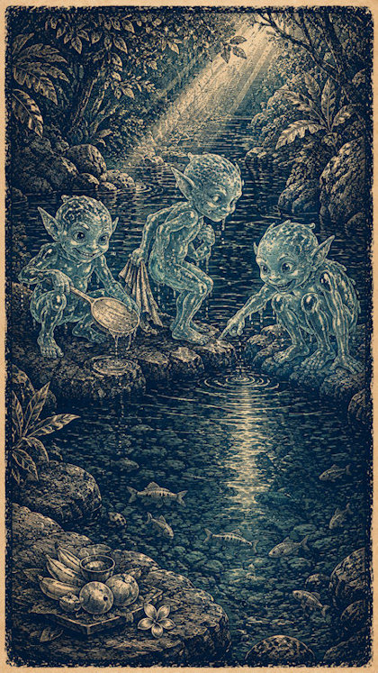
Las Managuas · El Salvador · Arte original · Mundo Maravilloso · 4:3
La Sirena del Rincón de la Vieja
También: La del Peine de Oro, La Sentada en la Roca
Esta entidad habita en pozas profundas de ríos caudalosos del oriente del país (San Miguel / La Unión). Se manifiesta como una entidad femenina que se sienta en rocas grandes a peinar su larga cabellera con un peine de oro sólido.
Causa una obsesión incontrolable en los hombres que la ven fijamente. Cuando la víctima intenta acercarse para quitarle el peine de oro, las corrientes del río aumentan súbitamente y lo succionan. Su función es similar a la de la Sirena de Alegría —seducción fatal— pero con un elemento material añadido: el peine de oro actúa como cebo que activa la codicia además de la atracción.
// Debilidad / Contramedida
No fijar la mirada en el brillo dorado del peine y alejarse de la poza antes de que el agua comience a agitarse.
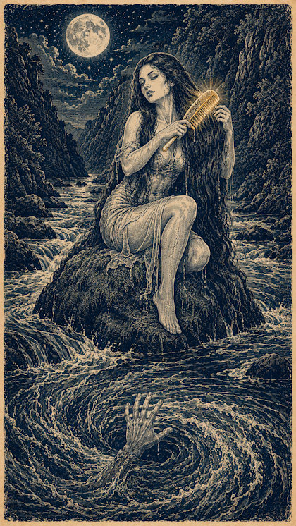
Sirena del Rincón · San Miguel / La Unión · Arte original · Mundo Maravilloso · 4:3
Brujos y Transformaciones Animales
La brujería animal en El Salvador no es un fenómeno individual sino un sistema de poder con reglas propias. Las transformaciones no son caprichosas: requieren ungüentos, oraciones al revés y pactos con fuerzas oscuras. Las entidades de este apartado son humanos que han traspasado un límite, no criaturas independientes. Su peligro radica precisamente en esa dualidad: conocen las costumbres humanas porque lo fueron, y usan ese conocimiento para el daño.
La Mona Bruja (o Muanas)
También: La del Techo, La que Ríe en la Noche
La Mona Bruja es el resultado de una práctica de magia negra derivada de sincretismos oscuros coloniales. Se manifiesta como un mono de tamaño desproporcionado, de pelaje negro y ralo, con extremidades muy largas y movimientos erráticos. Emite risas burlonas humanas.
Habita en techos de tejas de casas de pueblos antiguos y árboles de grandes copas (ceibas o amates). Causa terror nocturno, lanza piedras a las ventanas y roba frutas u objetos pequeños de los patios de las casas. Su presencia indica que alguien en la comunidad ha realizado un pacto oscuro o que hay brujería activa en la zona.
// Debilidad / Contramedida
Para capturarla, se debe lanzar un cinturón de cuero bendito en el suelo haciendo la forma de una cruz, o arrojar granos de mostaza bendita en el patio; la bruja se verá obligada a recogerlos uno a uno hasta que amanezca, perdiendo sus poderes con los primeros rayos del sol.
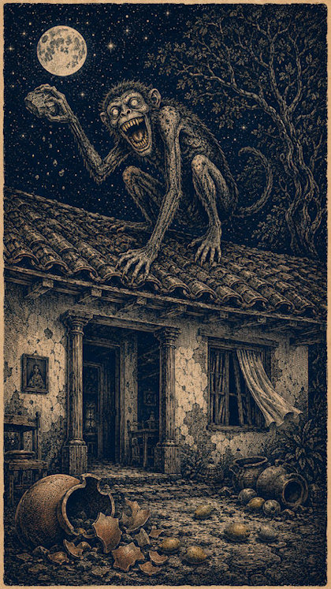
Mona Bruja · El Salvador · Arte original · Mundo Maravilloso · 4:3
La Chancha Bruja
También: La Cerda de la Noche, La que Embiste
Similar a la Mona Bruja pero con transformación por medio de ungüentos y oraciones al revés. Se manifiesta como una cerda de gran tamaño, sucia, con ojos inyectados en sangre que corre velozmente golpeando puertas y cercas.
Habita en calles empedradas, callejones oscuros y basureros de los pueblos a la medianoche. Ataca mordiendo las pantorrillas de las personas que caminan ebrias por la noche o embiste con fuerza las entradas de los hogares para asustar. Su presencia está asociada específicamente a la embriaguez nocturna, lo que la convierte en una advertencia moral contra el exceso de alcohol en espacios públicos oscuros.
// Debilidad / Contramedida
Se le puede repeler usando machetes curados (bendecidos) golpeando el suelo para hacer chispas, o arrojando sal gruesa directamente sobre su lomo.
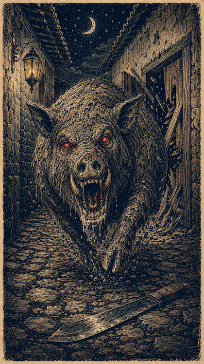
Chancha Bruja · El Salvador · Arte original · Mundo Maravilloso · 4:3
El Caminate
También: El Negro del Potrero, El que No Deja Rastro
El Caminate es una leyenda surgida en las grandes haciendas ganaderas del siglo XIX. Se manifiesta como un felino negro de proporciones colosales, similar a un jaguar gigante, que se mueve sin emitir el menor sonido.
Devora vacas, bueyes y caballos enteros en una sola noche, dejando corrales vacíos pero sin rastros de sangre ni huellas claras de salida. Su silencio es su marca más aterradora: un depredador que no deja rastro es un depredador que no existe para la lógica racional. Los hacendados que lo enfrentaron desarrollaron un sistema de defensa basado en plantas aromáticas, no en armas.
// Debilidad / Contramedida
Los hacendados rodeaban los corrales con fogatas alimentadas con ramas de ruda y romero para repeler su avance con el humo aromático.
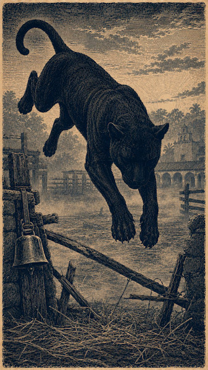
El Caminate · El Salvador · Arte original · Mundo Maravilloso · 4:3
Espectros y Leyendas Coloniales
El período colonial en El Salvador dejó un estrato de espectros que no son indígenas ni españoles puros, sino producto de la violencia del encuentro. Los espectros de este apartado son almas en pena con causas históricas específicas: sacerdotes decapitados, mujeres asesinadas, viajeros condenados. Su función no es meramente aterradora: son memoria histórica codificada en forma de entidad, recordatorios de que la colonización dejó cuerpos sin enterrar y deudas sin saldar.
El Padre sin Cabeza
También: El Cura Decapitado, El que Busca su Cabeza
El Padre sin Cabeza es un espectro colonial: el castigo eterno aplicado a sacerdotes que murieron cometiendo pecados capitales o que fueron decapitados injustamente durante revueltas coloniales. Se manifiesta como una figura sacerdotal —túnica, rosario, sombrero de clérigo— pero sin cabeza, o con la cabeza sostenida bajo el brazo.
Habita en las ruinas de iglesias coloniales, caminos entre pueblos antiguos y cementerios de fundación española. Su presencia no es agresiva sino angustiosa: pide que le devuelvan su cabeza, que le lean las oraciones que no pudo terminar, que alguien reconozca la injusticia de su muerte. Es uno de los pocos espectros salvadoreños cuya función es explícitamente redentora: no busca dañar sino ser liberado de su condena.
// Debilidad / Contramedida
Rezar las oraciones que no pudo terminar o reconocer verbalmente la injusticia de su muerte puede permitirle descansar. Ignorarlo prolonga su condena.
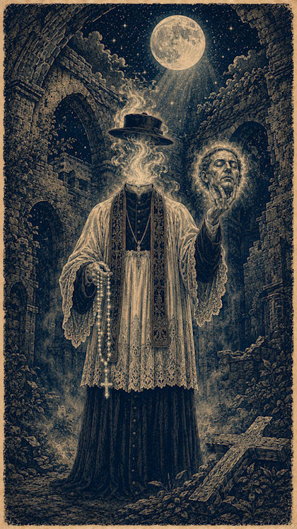
Padre sin Cabeza · El Salvador · Arte original · Mundo Maravilloso · 4:3
La Llorona Salvadoreña
También: La que Llora en el Río, La del Lamento Nocturno
Aunque la Llorona es una figura panlatinomericana, la versión salvadoreña tiene características propias. En El Salvador, no es una madre que ahogó a sus hijos (como en la versión mexicana), sino más frecuentemente una mujer joven que murió en el río durante el parto o que fue asesinada por un hombre que la abandonó. Su llanto no es de culpa sino de duelo y venganza.
Se manifiesta específicamente en las orillas del río Lempa, del Río Grande de San Miguel y de los afluentes del río Paz. Su función es de justicia poética: llora por lo que le fue arrebatado, y su llanto advierte a las mujeres jóvenes sobre los peligros del abandono y a los hombres sobre las consecuencias de la traición. Es memoria emocional codificada: el dolor de las mujeres asesinadas en la colonización que no tuvo registro escrito.
// Debilidad / Contramedida
No acercarse a la orilla cuando se escucha el llanto. Ofrecer una oración por su alma puede calmarla temporalmente. Las mujeres embarazadas deben evitar cruzar puentes sobre estos ríos de noche.
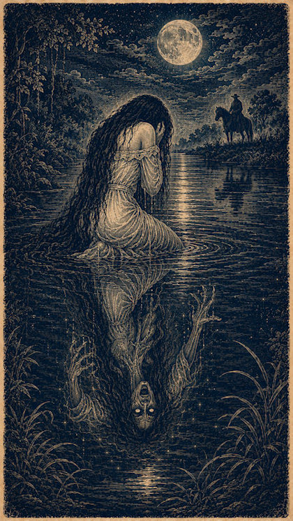
La Llorona · El Salvador · Arte original · Mundo Maravilloso · 4:3
El Justo Juez
También: El Señor de los Caminos, La Luz del Camino
El Justo Juez es una entidad del sincretismo religioso salvadoreño —mezcla de catolicismo colonial y cosmología pipil— que se manifiesta como una figura luminosa que aparece en los caminos nocturnos para proteger a los viajeros justos y castigar a los malvados. A diferencia de la Siguanaba o el Cipitío, el Justo Juez no tiene una forma zoológica definida, pero en muchas versiones se manifiesta acompañado de un toro blanco o un caballo luminoso.
Es una de las pocas entidades del imaginario salvadoreño con una función explícitamente protectora sin contrapartida negativa. Mientras el Cadejo tiene su versión destructora y la Siguanaba castiga, el Justo Juez es un guardián sin ambigüedad moral. Esto lo distingue como una figura surgida en el período colonial —cuando el catolicismo necesitaba figuras protectoras que compitieran con los seres del mundo pipil— más que como una entidad prehispánica pura.
// Observación
No tiene debilidad tradicional. Solo se manifiesta ante viajeros de conducta intachable. A los malvados los abandona a su suerte.
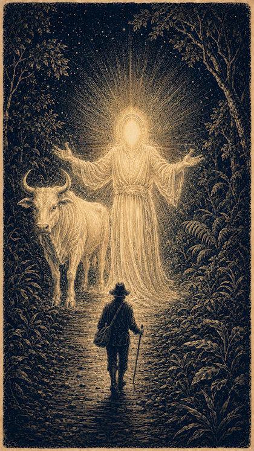
El Justo Juez · El Salvador · Arte original · Mundo Maravilloso · 4:3
Embaucadores y Castigadores Nocturnos
Este grupo reúne entidades cuya función no es la advertencia ecológica ni el duelo histórico, sino la regulación directa de la conducta nocturna: el embaucador que pone a prueba la higiene y la vanidad, la aparición sonora que anuncia muerte sin necesidad de ser vista, el grito que castiga al trasnochador solitario y el pacto que cobra el alma del ambicioso. Son figuras de frontera —entre lo indígena y lo colonial, entre el chiste de pueblo y la advertencia moral— que comparten el camino oscuro como escenario y la medianoche como hora de operación.
El Duende
También: El Enamorado, El Tata Duende (variantes rurales)
El Duende es la figura más doméstica y a la vez más ambigua del catálogo: no habita ríos ni montañas remotas, sino el espacio íntimo de la casa, el patio y el camino al colegio. Se le describe como un ser pequeño —de estatura infantil—, de rasgos arrugados que recuerdan tanto a un niño como a un anciano en miniatura, y casi siempre cubierto por un sombrero desproporcionado que le oculta el rostro. En las zonas rurales se le atribuye además dominio sobre los animales de corral: trenza las crines de los caballos durante la noche y esconde objetos pequeños como forma de poner a prueba la paciencia de quien lo padece.
Su rasgo definitorio es la fijación obsesiva: el Duende se "enamora" de una muchacha —casi siempre la más bonita del pueblo— y no la deja en paz hasta encontrarle un defecto que justifique abandonar el cortejo. Sus métodos van de lo travieso a lo perturbador: tirar terrones de tierra en la comida, generar ruidos y aromas nocturnos, sembrar inquietud hasta que la joven enferma de los nervios o queda, según la creencia popular, "solterona". La tradición oral registra también un desenlace mucho más oscuro en algunas versiones, donde el acoso del Duende no cede ante ningún remedio y termina en automutilación o tragedia —recordatorio de que, bajo el tono de cuento de niños, la leyenda codifica una advertencia sobre el acoso y el control obsesivo.
Existe una variante de raíz mesoamericana más amplia —presente también en Guatemala, Honduras y México bajo el nombre de Tata Duende— donde el ser actúa como guardián del bosque y castiga a cazadores y leñadores que sobreexplotan el monte. En El Salvador esta función protectora del territorio es menos prominente que la variante "enamorada", aunque ambas comparten el mismo núcleo: un espíritu menor que vigila el comportamiento humano desde los márgenes de lo doméstico y lo silvestre.
// Debilidad / Contramedida
El remedio tradicional consiste en que la joven adopte deliberadamente hábitos antihigiénicos o grotescos —como comer en el baño— para provocarle asco y que abandone el cortejo. Dejar pequeñas ofrendas en lugares apartados también se menciona como forma de aplacarlo.
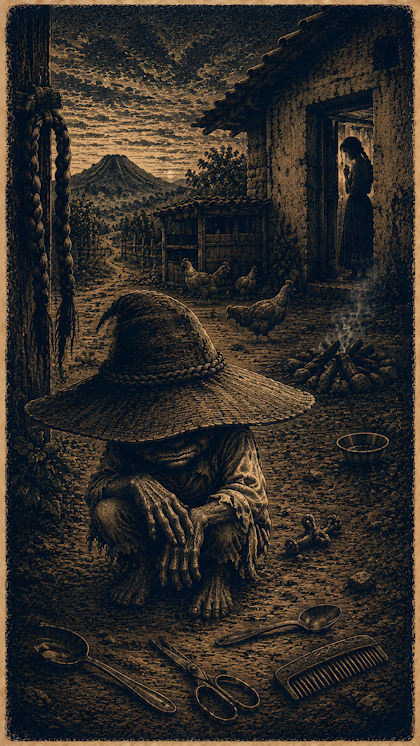
El Duende · El Salvador · Arte original · Mundo Maravilloso · 4:3
La Carreta Bruja o Chillona
También: La Carreta Chillona, La Carreta del Diablo
La Carreta Bruja es, ante todo, una leyenda acústica: nadie afirma haberla visto con claridad, pero generaciones de testigos rurales describen el mismo sonido —un chirrido agudo de ruedas de madera rozando ejes resecos, acompañado a veces de cadenas o huesos que se arrastran— recorriendo las calles de los pueblos después de la medianoche. Camina, según la tradición, de retroceso, sin bueyes que la guíen y sin conductor visible; algunas versiones sostienen que es un espíritu el que la conduce, recogiendo las almas de quienes mueren sin sepultura para trasladarlas al otro mundo.
El relato de origen más extendido se sitúa en la época colonial y atribuye la maldición a un personaje llamado Terencio Pérez, un hombre que aprendió de un indígena —en algunas versiones llamado Juan Tepa— los secretos curativos de las plantas, pero que se negaba a tratar a los enfermos indígenas que no podían pagarle, reservando sus remedios para los españoles. Su codicia y traición habrían quedado selladas en la carreta que ahora vaga eternamente como castigo.
Una segunda hipótesis, de naturaleza histórica antes que sobrenatural, vincula la leyenda a los brotes de cólera morbo que asolaron El Salvador en el siglo XIX (1836-1839 y 1858-1859): las carretas utilizadas para recolectar los cadáveres de las víctimas —que en los pueblos más golpeados llegaban a quedar amontonados en casas y calles— habrían dejado una huella tan profunda en la memoria colectiva que se transformó en la imagen de un vehículo fantasma que recorre la noche en busca de más almas. Bajo esta lectura, la Carreta Bruja es memoria epidémica codificada: el eco narrativo de una crisis sanitaria real que mató hasta una quinta parte de la población en su primera oleada. Hoy la leyenda se mantiene viva especialmente en la tradición oral de la zona oriental del país, y es protagonista de la celebración de la Calabiuza en Tonacatepeque cada 1 de noviembre.
// Debilidad / Contramedida
La regla tradicional es no mirarla: quien la observa directamente al pasar amanece muerto al día siguiente. Encerrarse y guardar silencio hasta que el chirrido se aleje es la única contramedida reconocida.
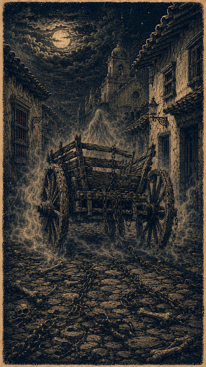
La Carreta Bruja o Chillona · El Salvador · Arte original · Mundo Maravilloso · 4:3
El Gritón de Media Noche
También: El Gritón, El Arriero de la Medianoche
El Gritón de Media Noche comparte con la Carreta Bruja su naturaleza primordialmente acústica: es una entidad que se anuncia por su grito —descrito como capaz de arrancar arbustos de raíz, hacer temblar la tierra y desbordar quebradas— antes que por su apariencia, que muy pocos relatos afirman haber visto con claridad. Su territorio son las montañas, los caminos de herradura y las colinas solitarias de todo el país, siempre en las horas más profundas de la noche.
La versión de origen más extendida lo presenta como un ser híbrido: hijo de una mujer indígena expulsada de su comunidad que, deambulando sola por el monte, fue forzada por un demonio. De esa unión nació una criatura de tamaño descomunal, mitad humana y mitad demoníaca, condenada a vagar gritando en la oscuridad. Una segunda versión, de tono menos sobrenatural, lo identifica como el alma en pena de un arriero que perdió su ganado y grita eternamente arreando reses que nunca encuentra; en esta variante se le describe con sombrero alón, fumando tabaco y montado en una mula negra de orejas grandes.
Su efecto sobre quienes lo escuchan no es solo el susto: la tradición oral le atribuye consecuencias físicas concretas —malestar corporal y fiebres altas— a quien se cruza con su grito, lo que lo distingue de otras entidades sonoras cuyo daño es puramente psicológico. Funciona, en ese sentido, como advertencia explícita contra transitar solo los caminos rurales después de la medianoche.
// Debilidad / Contramedida
Imitar o corearle el grito es contraproducente: la tradición sostiene que el Gritón redobla su fuerza para dejar sordo a quien lo remeda. La recomendación tradicional es evitar los caminos de herradura y las cimas solitarias después de la medianoche.
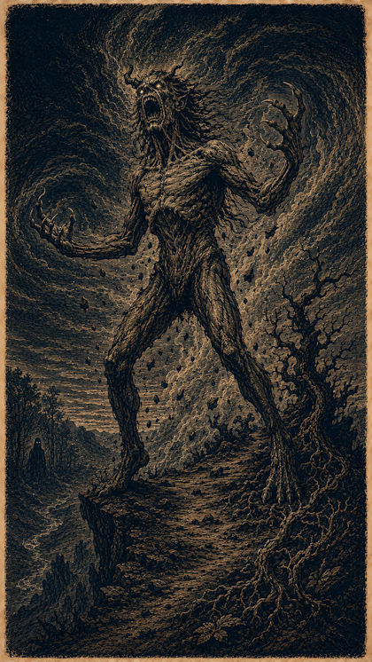
El Gritón de Media Noche · El Salvador · Arte original · Mundo Maravilloso · 4:3
El Caballero Negro
También: El Cobrador del Diablo, El Jinete Negro
El Caballero Negro es, de toda la mitología salvadoreña, la figura más explícitamente ligada al pacto fáustico: la leyenda de un hacendado o terrateniente que, hundido por la mala suerte en sus negocios, sus cosechas o su vida amorosa, invoca desesperado la ayuda del diablo. La respuesta llega envuelta en un torbellino espeso con olor a azufre y cacho quemado, del que emerge un jinete elegantísimo —vestido enteramente de negro, sombrero de anchas alas, capa y monturas relucientes— montado en un corcel igualmente negro que echa chispas al galopar.
Su negocio es directo: ofrece riqueza, poder, mujeres o buena fortuna a cambio del alma del solicitante, con un plazo fijo —generalmente siete años— durante el cual el beneficiario puede disfrutar de lo concedido. Cumplido el plazo, el Caballero Negro regresa a cobrar. En algunas variantes no es el diablo mismo sino su emisario o "cobrador de almas", lo que explica por qué algunos relatos lo sitúan recorriendo potreros y haciendas donde antiguos dueños desaparecieron sin dejar rastro, encontrándose después solo zacate donde debería haber un cuerpo.
La leyenda funciona como crítica social tan claramente como sobrenatural: explica —en clave moral— la riqueza repentina e injustificada de ciertos hacendados de la época colonial y post-colonial, sugiriendo que ninguna fortuna que aparece de la nada llega sin un costo oculto. Es, en ese sentido, prima cercana de figuras como el Charro Negro mexicano, aunque con un anclaje específico en la estructura de propiedad de la tierra salvadoreña.
// Debilidad / Contramedida
No existe contramedida tradicional registrada una vez aceptado el trato: el pacto es vinculante y el plazo se cumple inevitablemente. La única protección reconocida es no invocarlo: la entidad solo se manifiesta ante quien clama ayuda al diablo de forma explícita.
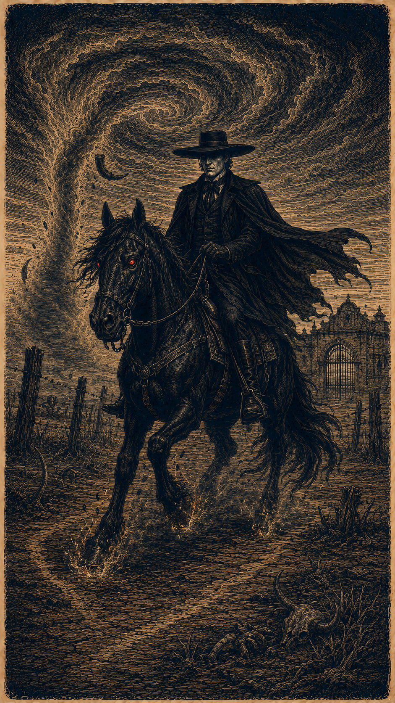
El Caballero Negro · El Salvador · Arte original · Mundo Maravilloso · 4:3
Notas Metodológicas
// Sobre este artículo
- Este artículo cubre exclusivamente seres de la tradición oral salvadoreña documentados en recopilaciones del siglo XX y trabajo de campo etnográfico contemporáneo. No incluye entidades de otras tradiciones latinoamericanas salvo cuando son variantes directas con raíz salvadoreña identificable.
- Las "debilidades" y "contramedidas" no deben entenderse como creencias supersticiosas sino como sistemas de conocimiento práctico codificado en lenguaje mítico. Morder una cruz de metal ante la Siguanaba, por ejemplo, puede interpretarse como una técnica de anclaje sensorial para romper estados de disociación.
- Las fuentes primarias citadas incluyen: las recopilaciones de María de Baratta (años 1940), los trabajos de Jorge Lardé sobre arqueología y folklore salvadoreño, los estudios lingüísticos y culturales de Pedro Geoffrey Rivas sobre lengua pipil, y fuentes de etnología contemporánea de los departamentos de Chalatenango, Morazán, Cabañas, Sonsonate y Ahuachapán.
- El corpus salvadoreño de mitología zoológica está significativamente sub-representado en los corpus académicos internacionales de mitología latinoamericana. La mayor parte de los estudios se concentra en tradiciones mexicanas y mayas guatemaltecas. Este artículo es una contribución a la visibilización de ese corpus.
- Las ilustraciones en formato 4:3 son posiciones reservadas para arte original. Se recomienda coherencia estética: grabado, línea densa, paleta acotada por categoría (carmesí para núcleo mítico, cian para agua, violeta para transformaciones, ámbar para espectros, rojo óxido para embaucadores y castigadores nocturnos).
- Este catálogo es un punto de partida, no un tratado exhaustivo. La tradición oral salvadoreña tiene una profundidad que requeriría volúmenes separados para cada departamento. Se recomienda el acceso a fuentes primarias para todo uso de investigación.
// Comentarios